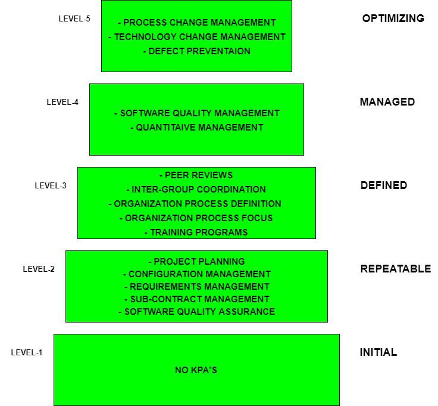

8.7 SEI-CMM Model
The Capability Maturity Model (CMM), developed by the Software Engineering Institute (SEI) at Carnegie Mellon University, is a strategy for software process improvement. It provides a staged framework for assessing and improving an organisation's ability to produce quality software consistently. CMM is widely used in SQA contexts to benchmark organisational maturity.
A detailed treatment of CMM from the Software Project Management perspective is available in §3.10 Capability Maturity Model. This section focuses on CMM's role in quality assurance and compares it with ISO 9000.

What is process maturity?
- Maturity refers to the degree of formality and optimisation of an organisation's software processes.
- A more mature process is more predictable in terms of time, cost, and quality because it is defined, measured, and continuously improved.
- CMM provides a roadmap: organisations start at Level 1 (chaotic) and systematically advance through five levels.
- Each level must be stabilised before advancing to the next — skipping levels is not permitted.
Five maturity levels
| Level | Name | Characteristics |
|---|---|---|
| 1 | Initial | Processes are ad hoc and chaotic; success depends on individual effort; no stable engineering practices; time and cost estimates are unreliable. |
| 2 | Repeatable | Basic project management is established; plans are based on experience from similar past projects; requirements management and tracking begin; successes can be repeated on comparable projects. |
| 3 | Defined | The software process is standardised and documented organisation-wide; training programs ensure staff competence; risk management is integrated; projects tailor the standard process rather than inventing their own. |
| 4 | Managed | Quantitative quality goals are set for products and processes; process performance is measured with statistical techniques; time and cost become predictable because variation is understood and controlled. |
| 5 | Optimizing | Defect root-cause analysis drives continuous process improvement; the organisation focuses on preventing defect occurrence through incremental and innovative technological changes. |
Key Process Areas (KPAs)
Each maturity level (except Level 1) is defined by specific Key Process Areas that the organisation must implement:
| Level | Key Process Areas |
|---|---|
| 1 — Initial | No formal KPAs — processes are ad hoc |
| 2 — Repeatable | Project planning, configuration management, requirements management, subcontract management, software quality assurance |
| 3 — Defined | Peer reviews, inter-group coordination, organisation process definition, organisation process focus, training programs |
| 4 — Managed | Software quality management, quantitative process management |
| 5 — Optimizing | Process change management, technology change management, defect prevention |
- KPAs define what an organisation must do well at each level; each KPA has goals, commitments, abilities, activities, measurements, and verification practices.
- Software Quality Assurance appears as a KPA at Level 2, reflecting that basic SQA practices are foundational to process repeatability.
- At Level 4, Software Quality Management becomes a KPA, indicating that quality is managed quantitatively rather than just checked.
CMM vs CMMI
- CMM was later extended to CMMI (Capability Maturity Model Integration), which combines software engineering with systems engineering, integrated product development, and supplier sourcing.
- CMMI uses staged and continuous representation; CMM uses only staged representation.
- For exams, knowing the five CMM levels and their characteristics is usually sufficient.
ISO 9000 vs SEI-CMM
| Aspect | ISO 9000 | SEI-CMM |
|---|---|---|
| Focus | Quality Management System — are processes documented and followed? | Process maturity — how capable and optimised are the processes? |
| Scope | All industries (manufacturing, services, software) | Software and systems engineering organisations |
| Assessment | Pass/fail certification by accredited auditors | Maturity level rating (1–5) by SEI-authorised assessors |
| Levels | Single standard (ISO 9001) — certified or not | Five maturity levels — organisation is rated at a specific level |
| Emphasis | Document control, customer focus, continual improvement | Process definition, measurement, quantitative management, defect prevention |
| Outcome | Certificate valid for ~3 years with surveillance audits | Maturity level rating indicating process capability |
| Improvement path | Continual improvement through PDCA cycle | Sequential level advancement with specific KPAs at each level |
- ISO 9000 and CMM are complementary — many organisations pursue both certifications.
- ISO 9000 asks "Do you have a quality system?"; CMM asks "How mature is your software process?"
- A Level 1 CMM organisation can theoretically hold ISO 9001 certification if its documented processes are followed, even though those processes may be immature.
Q: Describe the five CMM maturity levels with characteristics. Compare ISO 9000 and SEI-CMM.
Model answer points:
- CMM = SEI strategy for process improvement; assesses organisational software process maturity.
- Level 1 Initial: ad hoc, chaotic; Level 2 Repeatable: basic PM; Level 3 Defined: standardised process; Level 4 Managed: quantitative goals; Level 5 Optimizing: continuous improvement.
- Levels sequential — must stabilise each before advancing.
- KPAs define requirements at each level; SQA is a Level 2 KPA.
- ISO 9000 vs CMM: ISO = QMS pass/fail for all industries; CMM = 5-level maturity rating for software.
- ISO certifies process documentation; CMM measures process capability and optimisation.
- CMMI extends CMM to systems engineering and supplier sourcing.